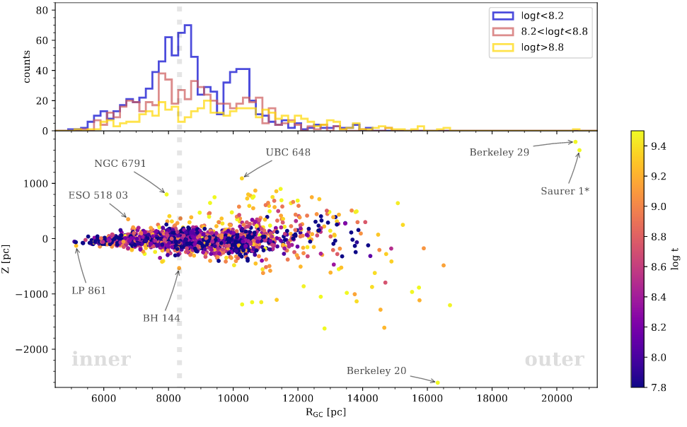
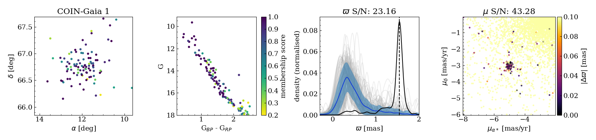
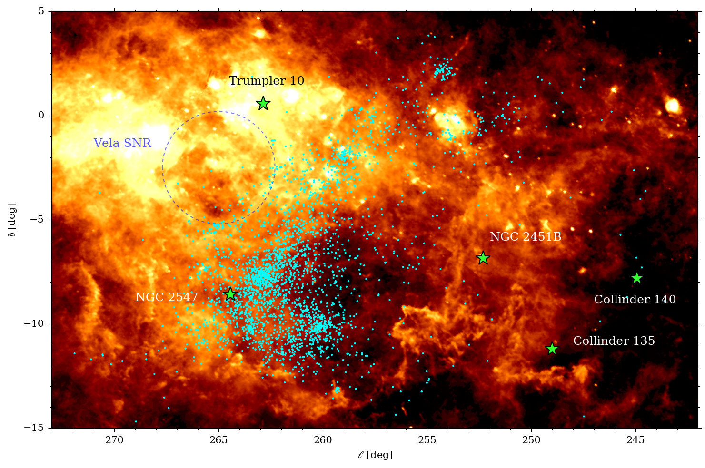
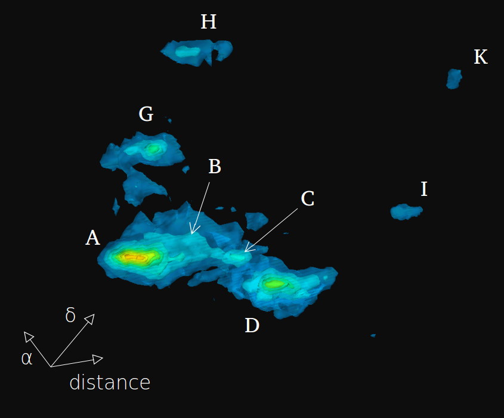
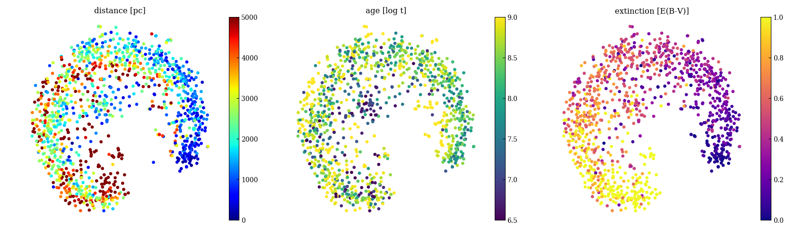

Profile
I am currently a Marie Sklodowska Curie Fellow in the Gaia group at the Institute for Space Science at the University of Barcelona (ICCUB), applying data analysis techniques within the realm of Galactic astrophysics. Neither observer nor theorist, something in-between.
Until 2018 I worked as a PhD student and postdoc in the Milky Way and Local Volume Group at the Leibniz-Institut für Astrophysik Potsdam (AIP) in Germany, where I got a PhD in astrophysics from the University of Potsdam in 2017. My work focused on the evolution and formation of the Milky Way, mostly using data from the near-infrared survey APOGEE and the asteroseismic mission CoRoT.
I have been a member of the SDSS Collaboration since 2012, working on validation and scientific exploitation for the Apache Point Observatory Galactic Evolution Experiment (APOGEE).
I am curious about Austrian 20th century literature, destructive-constructive progressive music, the philosophy of science, politics, rock climbing, and absurd vinyl records.
Discovering and characterising open clusters with Gaia
Open clusters are groups of a dozen to several thousands of stars that were born together from the same parent molecular cloud, and remained bound by gravity. Their distances and ages can be estimated more easily than for individual stars, and they can be used to trace the structure of our Galaxy. ESA's Gaia mission provides us with precise measurements of parallaxes and proper motions that can be used to identify compact groups of stars traveling together through the Galaxy. Most of these newly discovered clusters cannot be seen in static images of the sky, but can easily be spotted using the Gaia measurements of distance and velocity.
Cantat-Gaudin, T., Anders, F., Castro-Ginard, A., Jordi, C., Romero-Gómez, M. et al. (2020), Painting a portrait of the Galactic disc with its stellar clusters, A&A, 640, A1
Cantat-Gaudin, T., Anders, F. (2020), Clusters and mirages: cataloguing stellar aggregates in the Milky Way , A&A, 633, A99
Anders, F., Cantat-Gaudin, T., Quadrino-Lodoso, I., Gieles, M., Jordi, C., Castro-Ginard, A., Balaguer-Núñez, L. (2020), The star cluster age function in the Galactic disc with Gaia DR2: Fewer old clusters and a low cluster formation efficiency , A&A, subm.
Combining asteroseismology and spectroscopy for Galactic Archaeology
The ESA Gaia spacecraft provides us with precise measurements of parallaxes and proper motions that can be used to identify compact groups of stars traveling together through the Galaxy. Most of these newly discovered clusters cannot be seen in static images of the sky, but can easily be spotted using the Gaia measurements of distance and velocity.
Castro-Ginard, A., Jordi, C., Luri, X., Cantat-Gaudin, T., & Balaguer-Núñez, L. (2019), Hunting for open clusters in Gaia DR2: the Galactic anticentre, A&A, 627, A35. 2019A&A...627A..35C
Cantat-Gaudin, T., Krone-Martins, A., Sedaghat, N., et al. (2019), Gaia DR2 unravels incompleteness of nearby cluster population: new open clusters in the direction of Perseus, A&A, 624, A126. 2019A&A...624A.126C
The StarHorse code
Gaia can help us isolate groups of co-moving and co-eval stars. It has revealed that the group formerly known as the Vela OB2 associations is in fact made up of several dense clumps surrounded by a sparse stellar distribution.
The Gaia data also allows us to study the distribution of young stars in 3D, and to see that the structure is expanding and dispersing.

Cantat-Gaudin, T., Jordi, C., Wright, N. J., et al. (2019), Expanding associations in the Vela-Puppis region. 3D structure and kinematics of the young population, A&A, 626, A17. 2019A&A...626A..17C
Cantat-Gaudin, T., Mapelli, M., Balaguer-Núñez, L., et al. (2019), A ring in a shell: the large-scale 6D structure of the Vela OB2 complex, A&A, 621, A115. 2019A&A...621A.115C
Data mining and machine learning
Astronomical datasets are growing larger every year. Identifying patterns and clasifying objects can be done efficiently with machine learning methods. Here, a tentative classification of clusters based on their colour-magnitude diagrams, using the dimensionality reduction method t-SNE:
Cantat-Gaudin, T., Anders, F, Castro-Ginard, A., Jordi, C., Romero-Gómez, M. et al. (2020), Painting a portrait of the Galactic disc with its stellar clusters , A&A, 640, A1. 2020A&A...640A...1C
Cantat-Gaudin, T., Anders, F. (2019), Clusters and mirages: cataloguing stellar aggregates in the Milky Way , A&A, 633, A99. 2020A&A...633A..99C
Anders, F., Khalatyan, A., Chiappini, C., Queiroz, A. B., Santiago, B. X., et al. (2019), Photo-astrometric distances, extinctions, and astrophysical parameters for Gaia DR2 stars brighter than G = 18, A&A, 628, A94. 2019A&A...628A..94A